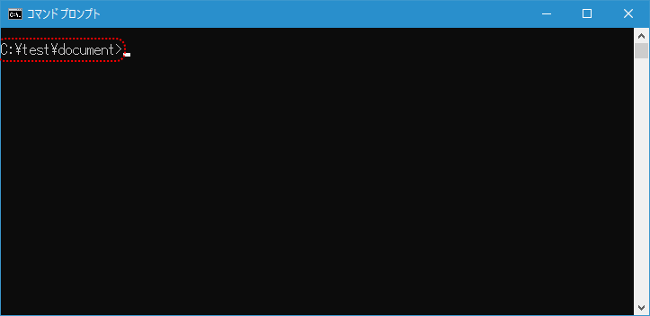
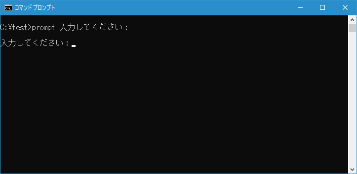
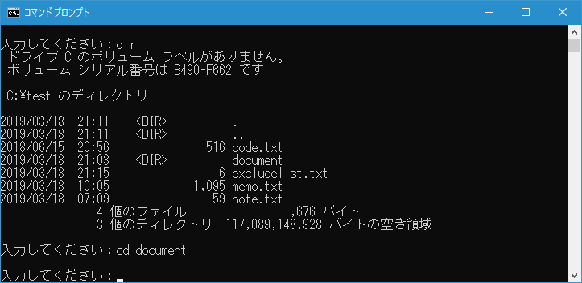
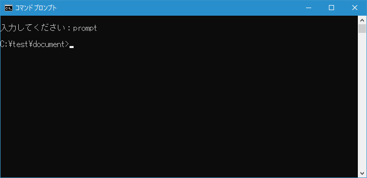
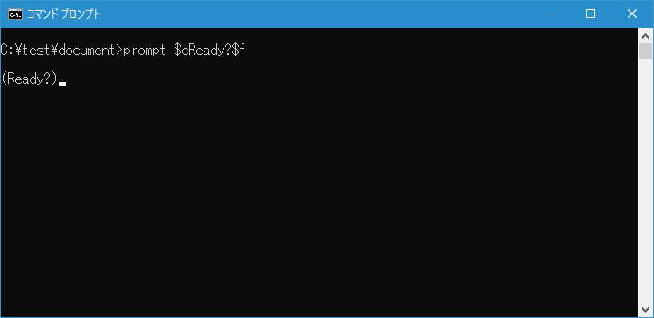
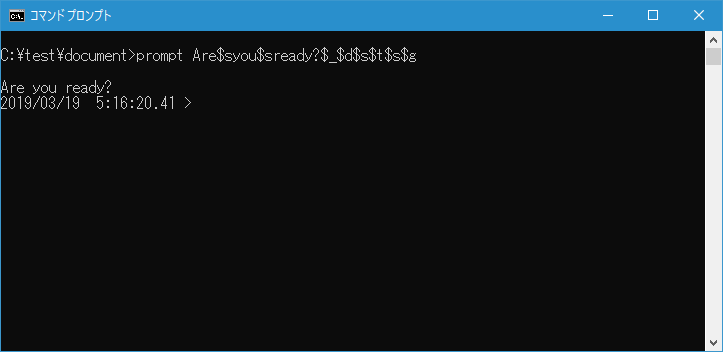

プロンプトの変更(PROMPT)
コマンドプロンプトでプロンプトに表示される文字列を変更できる PROMPT コマンドの使い方について解説します。
PROMPTコマンドの使い方
コマンドプロンプトのプロンプトとは次の部分のことです。デフォルトでは「現在のドライブとパス」＋「<」が設定されています。

PROMPT コマンドを実行するとプロンプトに表示される文字列を変更できます。書式は次の通りです。
PROMPT [文字列]
引数には固定の文字列を指定することもできますし、設定された特別な文字列(例えば「現在のドライブとパス」のようなもの)と組み合わせることもできます。
固定の文字列をプロンプトに指定する
例えばプロンプトに「入力してください：」と常に表示するように設定するには次のように実行します。
prompt 入力してください：
PROMPT コマンドを実行するとプロンプトが引数に指定した文字列に変わります。

プロンプトが固定の文字列なので CD コマンドなどを使ってカレントディレクトリを変更してもプロンプトの表示は変化がありません。

なお空白や > などの文字はあとで解説する特殊コードを使って設定する必要があります。
プロンプトをデフォルトに戻す
プロンプトをデフォルトで設定されている「現在のドライブとパス」＋「<」の表示に戻すには引数なしで次のように実行します。
prompt
PROMPT コマンドを実行するとプロンプトがデフォルトの値に戻ります。

特殊コードを使用してプロンプトを設定する
PROMPT コマンドの引数では次の特殊コードが使用できます。
$A & (アンパサンド)
$B | (パイプ)
$C ( (左かっこ)
$D 現在の日付
$E エスケープ コード (ASCII コードの 27)
$F ) (右かっこ)
$G > (不等号 (より大))
$H バックスペース (直前の文字を削除します)
$L < (不等号 (より小))
$N 現在のドライブ
$P 現在のドライブとパス
$Q = (等号)
$S (空白)
$T 現在の時刻
$V Windows のバージョン番号
$_ キャリッジ リターンとラインフィード
$$ $ (ドル記号)
デフォルトで設定されている「現在のドライブとパス」＋「<」は次のように実行した場合と同じです。
prompt $p$g
テキストと組み合わせることもできます。例えば「(」＋「Ready?」＋「)」に設定する場合は次のように実行してください。
prompt $cReady?$f
PROMPT コマンドを実行するとプロンプトが (Ready?) に変更されます。

改行などと組み合わせてより複雑なプロンプトを設定することもできます。
prompt Are$syou$sready?$_$d$s$t$s$g

-- --
PROMPT コマンドを使ってプロンプトに表示される文字列を変更する方法について解説しました。
( Written by Tatsuo Ikura )

著者 / TATSUO IKURA
初心者～中級者の方を対象としたプログラミング方法や開発環境の構築の解説を行うサイトの運営を行っています。